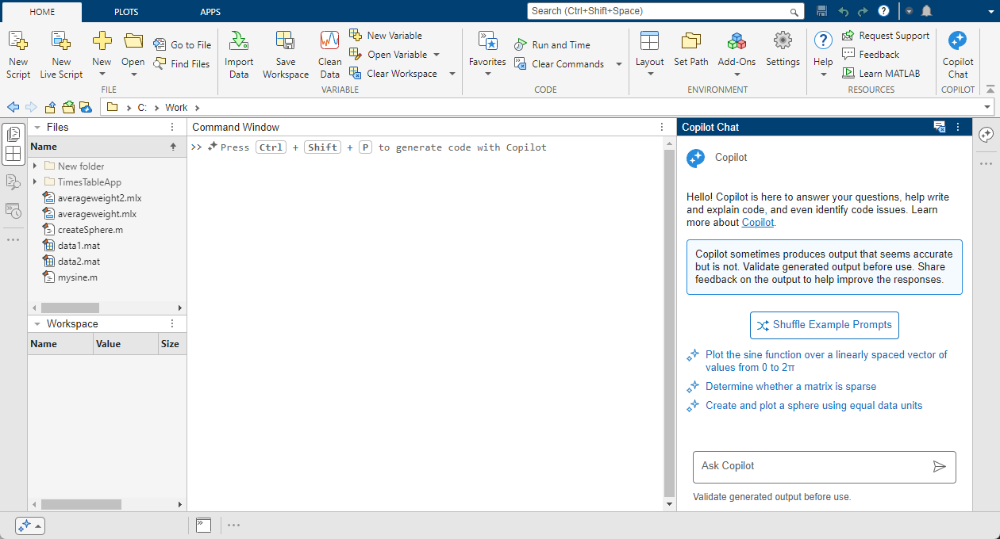
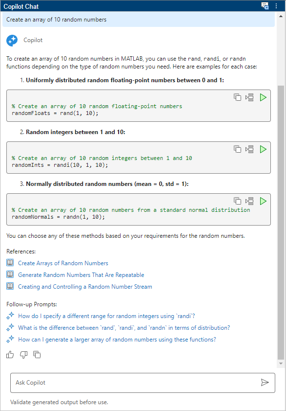
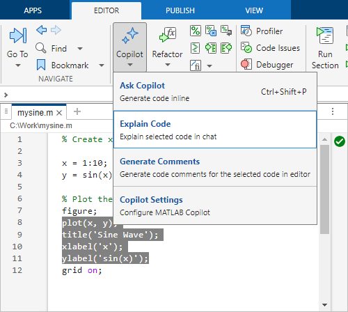
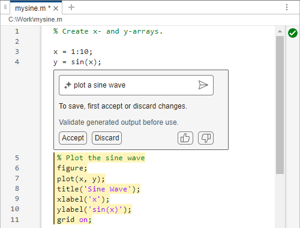
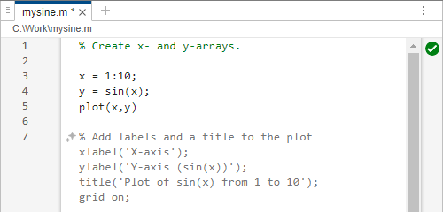

Set Up MATLAB Copilot
MATLAB® Copilot provides generative AI–powered capabilities specifically for the MATLAB desktop environment. With MATLAB Copilot, you can ask questions, generate code, and get explanations for selected code and error messages. Responses in the Copilot Chat panel are grounded by relevant MathWorks® documentation and code examples.
There are several ways to use MATLAB Copilot capabilities:
To chat with MATLAB Copilot, use the Copilot Chat panel. Copilot Chat is an interactive assistant that can help you explore ideas and express them in code. Its responses can include both conversational text and generated code.
To perform common tasks such as explaining code and errors or generating comments, use Copilot actions. You can access Copilot actions from menus in the Editor, Live Editor, and Command Window.
To generate or modify code in the Editor, Live Editor, or Command Window, open an Ask Copilot text box. Describe the code you want. Then accept or discard the generated code directly in your code file or in the Command Window.
To get code suggestions from MATLAB Copilot as you type in the Editor or Live Editor, use Copilot autocompletions. Instead of responding to prompts, MATLAB Copilot generates code based on the code and comments in your file.
Sign In as Licensed User
To use MATLAB Copilot, you must have a MATLAB Copilot license. Unlike other MathWorks products, there is no toolbox or app to download and install for MATLAB Copilot. Instead, you gain access to MATLAB Copilot as a licensed user through your MathWorks Account.
First, sign in to your MathWorks Account using the Sign In button at the upper right corner of MATLAB.
If you already have a license for MATLAB Copilot, then several MATLAB Copilot features appear at startup. The symbol indicates ways that you can interact with MATLAB Copilot.
If you do not have a license for MATLAB Copilot, then contact your license administrator. Or, if you do not have a license for MathWorks products through an organization, you can buy a license or request a trial from the MathWorks Store.
Start and Chat with Copilot
When you start MATLAB, several MATLAB Copilot features appear:
Copilot Chat panel on the right.
Copilot Chat button on the MATLAB Toolstrip. To open the Copilot Chat panel, click the button.
Copilot Chat icon on the right sidebar. To open and close the Copilot Chat panel, click the icon.
Ctrl+Shift+P help text in the Command Window.
Copilot status indicator on the lower left corner. It indicates if Copilot is enabled or busy with a request. It also provides access to Copilot Settings.

The Copilot Chat panel has an Ask Copilot text box where you can enter prompts—statements or questions that you write using natural language. For example, enter this prompt:
Create an array of 10 random numbers
Copilot returns a response that can include generated code, references to documentation, and follow-up prompts. If you write a prompt in a language other than English, Copilot returns a response in that language.
Copilot responses can contain errors and inaccuracies. Validate any generated code and text before using it.

Use Copilot Actions
Copilot provides a set of actions in the Editor, Live Editor, and Command Window. You can use these actions to explain highlighted code or generate new code or comments. For example, highlight some code in a code file. To get an explanation of the code, select Copilot > Explain Code on the Editor or Live Editor tab of the MATLAB Toolstrip. Or, right-click and select Copilot > Explain Code from the context menu.

Generate Code from Your Prompts
You can generate code inline using Copilot in the Command Window, Editor or Live Editor. If you press Ctrl+Shift+P, or right-click and select Copilot > Ask Copilot from the context menu, then an Ask Copilot text box appears at your cursor location. Copilot generates code in response to prompts that you type in the text box.
For example, write a script that calls the sin function. Then open
an Ask Copilot text box. Ask Copilot to plot a sine wave. In response,
Copilot generates code to plot the sine wave.

Generate Code as You Type
Copilot autocompletion provides code predictions as you work in the Editor or Live Editor. With autocompletion you do not need to provide prompts. Instead, Copilot generates suggestions based on the code and comments that you have just written.
For example, write a script that calls the sin function and then
the plot function. Then press Enter. Copilot
autocompletion generates code for a next possible step. To accept all or part of the
suggested code, press Tab or Right Arrow. To discard the
suggestion, press Esc.

Check Copilot Responses
Because generative AI responses can contain errors and inaccuracies, validate any generated code and text before using it.
You can use these strategies to validate Copilot responses:
Review generated code before using it.
Run generated code and review its output. Confirm that the output is what you expected.
Check that the generated response aligns with the documentation.
In the Copilot Chat panel, ask Copilot to explain the code it just generated.
Highlight code, right-click and select Copilot > Explain Code. If you highlight several lines, Copilot can return a line-by-line explanation in the Copilot Chat panel.
Provide Feedback
MathWorks uses your feedback to improve MathWorks products and services.
There are three buttons at the end of every Copilot response:
— Send positive feedback that the answer is helpful.
— Provide negative feedback that the answer is unhelpful. This button opens a dialog box where you can provide more details. You can choose to send your chat history as part of your feedback.
— Copy the entire response to the clipboard.